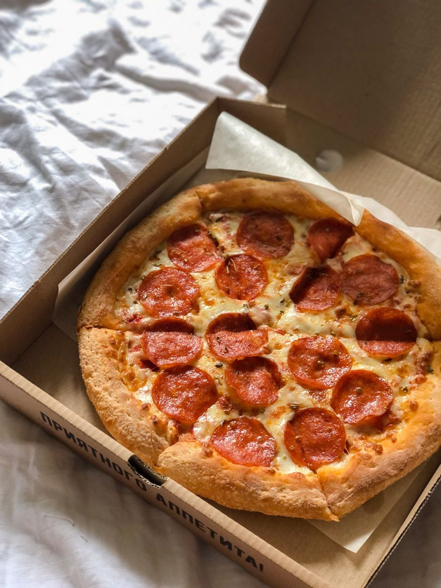

PIZZA
Ingredientes
Para la masa
- 500 g de harina (000 o común)
- 300 ml de agua tibia
- 25 g de levadura fresca (o 7 g de levadura seca)
- 2 cdas de aceite de oliva
- 1 cdita de sal
- 1 pizca de azúcar
Para la salsa
- 1 lata de tomate triturado (400 g) o 4 tomates frescos pelados y procesados
- 2 cdas de aceite de oliva
- 1 diente de ajo (opcional)
- 1 pizca de azúcar (para quitar acidez)
- Sal y pimienta a gusto
- Orégano o albahaca seca
Para la cobertura
- jamón, aceitunas, morrones, cebolla, etc.
- 250 g de queso mozzarella
Pasos
Activar la levadura
Disolver la levadura en el agua tibia con el azúcar.
Dejar reposar 10 minutos hasta que haga espuma (así sabés que está activa).
Preparar la masa
En un bowl grande poner la harina y la sal.
Hacer un hueco en el centro y agregar la levadura activada y el aceite.
Mezclar hasta formar una masa.
Amasar
Pasar la masa a la mesa y amasar unos 10 minutos hasta que quede lisa y elástica.
Si se pega mucho, espolvoreá con un poquito de harina.
Leudar
Colocar la masa en un bowl aceitado, tapar con un repasador y dejar reposar 1 hora aprox., hasta que duplique su tamaño.
Formar la base
Dividir la masa en 2 bollos.
Estirar cada uno sobre una pizzera aceitada o enharinada, dándole forma redonda.
Precocinar la base
Llevar las pizzeras con la masa al horno precalentado a 200 °C por 8-10 minutos (solo la base, sin salsa). Esto evita que quede cruda.
Preparar la salsa
En una sartén, sofreír el ajo con un poco de aceite.
Agregar el tomate, sal, orégano y albahaca. Cocinar 10 minutos a fuego bajo.
Armar la pizza
Sacar la base precocida, untar con salsa, cubrir con mozzarella y los ingredientes que quieras.
Hornear
Llevar nuevamente al horno a 200 °C hasta que el queso se derrita y los bordes estén dorados (10-15 minutos).
Servir
¡Lista tu pizza casera! Podés terminar con un chorrito de aceite de oliva o unas hojas de albahaca fresca.